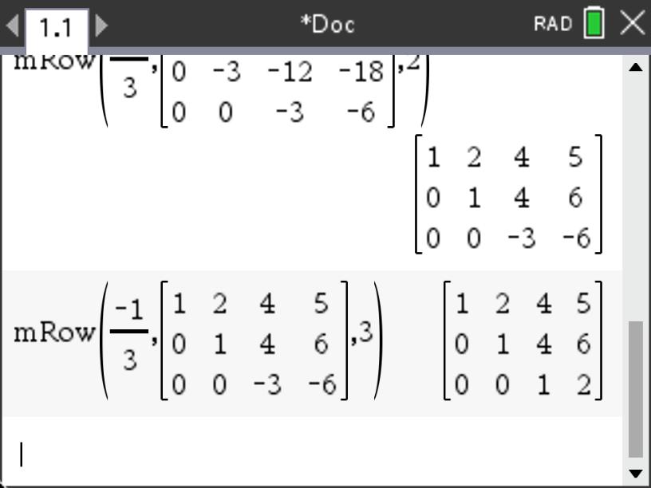

Imagine you are standing in an unfamiliar forest and seeking a way out. You can see the sun and know the approximate time of day and know that your parked car is on the northmost edge of the forest. How do you navigate your way toward your car? Do you need to know your exact location or do you simply need to identify a direction you need to go from your current location? This question involves the idea of a direction and "magnitude" meaning the length of your path. This is one use of objects called vectors. While this interpretation of vector is a commonly use, there are other ways vectors can describe other phenomena. Here we will examine the concept of vectors as well as matrices (a kind of super vector) that can store information that vectors can use.
Subsection2.4.1Modeling Data and Moving Between Worlds
The Common Core State Standards include the teaching of vectors and matrices, although not all aspects of these concepts are expected for all student who graduate high school. Many of the more complex uses of vectors and matrices are left for those planning to enter mathematically rigorous fields of study at the university level. The CCSS denote this by placing a (+) next to the standard that is not intended for all students (see Figure 2.4.1).
Figure2.4.1.CCSS: Vectors and Matrices
Activity2.4.1.
Jason is teaching an Algebra 2 class and is introducing a unit on vectors and matrices. To motivate the topics, he has created a project where students are working for a company that sells products to other companies and must manage the relationship between the price they charge for their products and the revenue they can generate from sales. He begins class by posing the task.
Jason : Today we are going to deal with a problem that many businesses face. How do you set prices for your products and what effects do those decisions have on the revenue you get from your consumers? Suppose we have a company that sells T-shirts to three main stores: Total Tees, T-Riffic, and T-Rex. Our company mass produces four basic prints of T-shirts. Let’s call them T1, T2, T3, and T4. On the board, I have put the orders for each type of T-shirt for each of the three stores.
Figure2.4.2.Jason’s List of T-Shirt Orders
We want to be able to work with various options of pricing for the different shirts as the demand warrants. For example, if one particular print gaiin popularity, we might want to raise its cost to the stores since there is higher demand. If another print is less popular, we may want to lower the price we charge the stores to encourage more demand. Long-story-short, we want to develop a way to calculate the revenue we get from each store as we tweak the prices we charge for the different shirts. Does anyone have any questions? Yeah, Bri?
Bri : So what you’re saying is that if we have the prices, we want to be able to quickly find the total amount we get from each store? With the orders you put on the board?
Jason : Yep. You got it!
Nic : What if the orders change?
Jason : Excellent question! Let’s just assume the orders stay the same here and we are just messing with the prices for now. Make a note, though, Nic, and we’ll come back to your idea later.
Rosa : Can we have some prices to start? I’d like to have some prices so I can do some calculations to see what’s happening.
Jason : OK, how about saying that we charge $12 for T1, $9 for T2, $10 for T3, and $8 for T4. Will that work?
Rosa : Thanks. That’ll give us somewhere to start.
Jason : Great, now go ahead in your groups and talk about how you might go about this. Feel free to use any tools we usually have in class like your computer or CAS.
[Jason allows the students about 20 minutes to start talking about ways to handle the situation. As he circulates, Jason notices Mia’s group working with their CAS to take a functional approach to deal with problem. He makes a note to have Mia share when the class comes back together for discussion. Jason also notes that Nic’s group seems to holding onto Nic’s earlier comment about changing orders and have started to explore the problem with a spreadsheet. Jason was happy to see Nic’s group’s approach as he thinks it will help him transition eventually to defining multiplication between a matrix and a vector. After time for exploration, Jason brings the class back together to share ideas.]
Jason : So what did you try? Anyone want to go first? Yeah, Mia?
Mia : Well, we kinda used our CAS to define functions for each store. We can put the in the functions and it gives us the money we get froom them.
Jason : The revenue?
Mia : Yeah, I guess.
Jason : Can I show your calculator on the display?
Mia : Yeah, I’m logged in.
[Jason displays Mia’s calculator through the wireless network. (see Figure 2.4.3)]
Figure2.4.3.Mia’s Group’s Defined Functions
Jason : Tell us what everything is.
Mia : Well, the tt is for orders for Totally Tees, tr is for T-Riffic, and tx is for T-Rex. We just used w,x,y, and z for the placeholders for the prices so we can just enter them in the functions.
Jason : Great idea. Can you show us how you would calculate the revenue.
Mia : Sure, just put in 12, 9, 10, and 8 in the functions and you get ...
Figure2.4.4.Mia’s Group’s Defined Functions
Jason : That’s a neat way to do it so you don’t have to keep doing the same thing on your calculator and retyping the orders. With my luck, I’d retype something wrong anyway.
Vero : We kinda did something like that, but when our group was talking, Nic was sharing more about what he said earlier and we came up with something that lets us change more than the prices.
Jason : Can you share it? Can I put your calculator on the display?
Vero : I didn’t do it on the calculator, but we used our Chromebooks. Can I plug it in?
Jason : Sure, bring it up.
[Vero brings her laptop up to the front and plugs it in to get Figure 2.4.5]
Figure2.4.5.Vero’s Group’s Spreadsheet with Orders and Prices
[Jason smiles. He can’t believe his luck that Vero’s group formatted the spreadsheet the way they did with the prices listed vertically. As he looks at the command line for formatting the computation, the colored entries match his plans for later in the lesson.]
(a)
In your groups, discuss your thoughts on the two approaches. How are they the same? How are they different? Summarize your thoughts on your whiteboards.
(b)
If you were in Jason’s position, how would you link the approaches of Mia’s and Vero’s groups? What would you do next to make the connection? What common mathematical concept(s) are being used here?
(c)
In the episode, Jason begins to smile as he sees the method that Vero’s group used. Why do you think he was smiling? Where will he take the lesson next? How does Kaput, Blanton, and Moreno’s model apply here and how is it "playing into Jason’s hand"?
(d)
In looking at Vero’s spreadsheet, discuss in your groups how a spreadsheet might be a useful tool with young learners (elementary school) to introduce the concept of variable.
In this section we will look at linear algebra as a way to encode information and operate on it allowing us to move between different sets of information. To this end, we will define how matrices and vectors are operated on with binary operations like addition and multiplication. While multiplication of matrices may seem weird at first, you will see that it is defined as it is for convenience in manipulating data and transforming different types of values into other computed values based on them. We begin by considering a case where we want to move between a pricing scheme and the revenue it generates for three different companies with three different sets of orders of our products.
To accomplish this, we will use constructs created to deal with objects that contain multiple entries. In the scenario we are using where companies place orders for products, we want to encode the numerical values for the orders organizing them according to the product and company placing the order. Here just want to reduce the information to an array of values and so we define a matrix as an array of values (or objects) consisting of rows and columns. We typically contain these values with brackets or parentheses like:
In the matrices above, the columns could represent the numbers of each of four products being ordered and the rows could represent the three different companies placing the orders (see the table of orders for this situation given in Table 2.4.10).
We also define a vector as matrix with a single column such as \(\mathbf{v}=\begin{bmatrix}
2\\0\\-3
\end{bmatrix}\) or \(\mathbf{w}=\begin{bmatrix}
1\\7\\-1\\4
\end{bmatrix}
\text{.}\) Note that we are using boldface to denote the names of the vectors for convenience to distinguish them from numerical objects that we call scalars. In a text like this, using boldface makes sense in print, but typically, in written work, we use a harpoon over the name since boldface is not practical with a pen. In this case, we would write the names as \(\overset{\rightharpoonup}{v}\) or \(\overset{\rightharpoonup}{w}\) respectively.
You may have encountered vectors before in geometry or physics. We will go into greater detail later with respect to the geometric interpretation, but for now, the behavior remains the same in that operations still work as they do in geometry and physics. Essentially, vectors consist of components so that when the vectors are added, we simply add the components.
Definition2.4.6.
If \(\mathbf{v}\) and \(\mathbf{u}\) are vectors, we define vector addition as adding the vectors component by component. Note that the vectors must be of the same dimension.
For example, suppose we have the two vectors in \(\mathbb{R}^3\text{,}\)\(\begin{bmatrix}
1\\-5\\2
\end{bmatrix}
\text{and}
\begin{bmatrix}
2\\1\\7
\end{bmatrix}
\text{.}\) Adding these would result in \(\begin{bmatrix}
1\\-5\\2
\end{bmatrix} +
\begin{bmatrix}
2\\1\\7
\end{bmatrix} =
\begin{bmatrix}
3\\-4\\9
\end{bmatrix}
\text{.}\)
The other basic operation we can do with vectors is to scale them (geometrically make them longer or shorter or in the case of negative values, make them go in the opposite direction). For this reason, when we multiply the vector by a numerical value, we call that value a scalar. For example,
We can use these linear combinations applying them to our previous scenario for moving between price of materials and the revenue they generate.
Activity2.4.2.Working with Vectors.
As we begin to work with vectors, we should examine how basic operations with them work both numberically and geometrically. Here we will first look at vector addition and then scalar multiplication.
(a)
In Definition 2.4.6, we defined an addition for vectors based on component-wise addition. Consider the vectors in \(\mathbb{R}^2\text{,}\)\(\mathbf{v}=\begin{bmatrix} 2\\1 \end{bmatrix}\) and \(\mathbf{w}=\begin{bmatrix} 1\\3 \end{bmatrix}\text{.}\) Numerically add these two vectors in two ways, first \(\mathbf{v}+\mathbf{w}\) and then \(\mathbf{w}+\mathbf{v}\text{.}\) Give your result in each case and describe what you notice.
(b)
On the grid in Figure 2.4.8, plot both \(\mathbf{v}\) and \(\mathbf{w}\) as directed line segments (i.e. arrows). Also plot the results you obtained for \(\mathbf{v}+\mathbf{w}\) and \(\mathbf{w}+\mathbf{v}\text{.}\) In your groups, discuss how you might interpret movement from the origin along \(\mathbf{v}\) and \(\mathbf{w}\) to arrive at the location of \(\mathbf{v}+\mathbf{w}\) and \(\mathbf{w}+\mathbf{v}\text{.}\) How is the interpretation of movement different depending on whether you are using \(\mathbf{v}+\mathbf{w}\) or \(\mathbf{w}+\mathbf{v}\text{?}\) Sketch the directed movement as a combination of two vectors (arrows) for each case.
Figure2.4.8.Grid for Vector Addition
(c)
In Definition 2.4.7, we defined scalar multiplication for vectors based on component-wise multiplication by the same scalar (number). Consider the vector in \(\mathbb{R}^2\text{,}\)\(\mathbf{v}=\begin{bmatrix} 2\\-1 \end{bmatrix}\text{.}\) Numerically multiply this vector by the scalars \(c=-1\text{,}\)\(c=3\text{,}\) and \(c=-2\text{.}\) Give your result in each case.
(d)
On the grid in Figure 2.4.9, plot \(\mathbf{v}\) and \(c \cdot \mathbf{v}\) as directed line segments (i.e. arrows) for each value of \(c\text{.}\) Describe what you notice about all of these results.
Figure2.4.9.Grid for Vector Addition
Subsubsection2.4.1.1Linear Combinations and Dealing with Data
Continuing our scenario from the introduction. Suppose that a supplier provides four different products with prices, \(p_1, p_2, p_3, p_4 \text{,}\) to three companies. One thing we may want to do is to play with pricing schemes and look at the generated revenue we would get from each of the three companies. Suppose we have orders from the three companies for each of our four products as given in the table below.
Table2.4.10.Product Orders
Clients
Product 1
Product 2
Product 3
Product 4
Company 1
14
9
34
41
Company 2
32
7
12
52
Company 3
21
8
5
23
Activity2.4.3.Prices, Vectors, and Revenue.
Consider the scenario given above for the orders by three companies for four different products.
(a)
Thinking of the four Products from Table 2.4.10 as each being a vector where the entries of the vector store the orders made for each of the three companies, express this information as a set of four vectors in \(\mathbb{R}^3\text{.}\)
Answer.
Since there are four Products, we can express the orders from the three companies for each Product as an ordered triple (or vector) containing three entries (one for each company) for that product. This would give us a set of four vectors:
If Product 1 is priced at $12, Product 2 is priced at $9, Product 3 is priced at $15, and Product 4 is priced at $7, using these prices for each of the four Products in the table as scalars, write a linear combination of the vectors from your set from part (a) that when added will give a vector in \(\mathbb{R}^3\) that represents the revenue generated from each company. How much did you collect from each company? Feel free to use your CAS to do the computation here.
This means we received $1046 from Company 1, $991 from Company 2, and $560 from Company 3.
(c)
Since you allowed your CAS to do the computation for part (b), let’s think about how it is doing the arithmetic. Using what we have defined for combining scalar multiplication and vector addition in Equation 1.1.2, show the details of how the CAS was computing the resulting vector that you obtained in part (b).
In general, we can think of the selling price for each of the four Products as scalars \(p_1, p_2, p_3, p_4 \text{.}\) Give a general expression in terms of \(p_1, p_2, p_3, p_4 \) for the revenue generated by the purchases for the three companies expressing them as a linear combination of three-entry revenue vectors (one entry for each company) resulting in the revenue vector, \(\begin{bmatrix} r_1\\r_2\\r_3\end{bmatrix}\text{.}\)
Notice that where the product and sum are combined in part (c) we have the scalar values (or prices) of each Product ($12, $9, $15, and $7) being multipled by all entries in their respective vectors where the number of orders of each Product is placed in the vector in order by the company. When these vectors are then added, we get the total revenue for each company organized as an ordered triple (since there are three companies).
Here we are purposefully using an example where the number of entries in each set of values of interest (prices and revenue) are different to highlight that although we can have the same number of entries in each set be the same, it is not necessary. Eventually we will express the prices as a vector consisting of four entries and the revenue as a vector consisting of three entries where we can think of the process of going from prices to revenue as a transformation between worlds so to speak. In this case we will have four entries in one set of vectors/world (prices of different Products) meaning that these vectors exist in \(\mathbb{R}^4\) such as \(\begin{bmatrix}
p_1\\p_2\\p_3\\p_4
\end{bmatrix}\) and three entries in the other set of vectors/world (revenue from each of the three companies) existing in \(\mathbb{R}^3\) like \(\begin{bmatrix}
r_1\\r_2\\r_3\end{bmatrix}
\text{.}\)
In the previous activity, you may have noticed behaviors of the arithmetic when working with the vectors and scalars that are familiar. From your basic experiences in elementary school, you will recall some properties for operating on numbers that seem to also be happening in your work with vectors. Let’s explore these briefly by using the properties of vector addition and scalar multiplication we have just defined.
Activity2.4.4.Structure of Vectors.
Consider the vectors \(\mathbf{u}=
\begin{bmatrix}
-1\\2\\5
\end{bmatrix}\text{,}\)\(\mathbf{v}=
\begin{bmatrix}
2\\3\\0
\end{bmatrix}\text{,}\) and \(\mathbf{w}=
\begin{bmatrix}
-2\\-1\\4
\end{bmatrix}\text{.}\) Define each of these vectors in your computer algebra system (CAS).
(a)
Based on what we know about how we have defined vector addition and the fact that all of these vectors are in \(\mathbb{R}^3\text{,}\) when we add any two of them we will get another vector in \(\mathbb{R}^3\text{.}\) However, what other properties hold? Using your CAS, compute \(\mathbf{u}+\mathbf{v}\) and then compute \(\mathbf{v}+\mathbf{u}\text{.}\) Describe what you notice? Have you seen this behavior before with real numbers? What is this property called?
(b)
Using your CAS, compute \(\left(\mathbf{u}+\mathbf{v}\right)+\mathbf{w}\text{,}\) first by computing \(\mathbf{u}+\mathbf{v}\) and then adding \(\mathbf{w}\) to your result. Now compute \(\mathbf{u}+\left(\mathbf{v}+\mathbf{w}\right)\text{,}\) first by computing \(\mathbf{v}+\mathbf{w}\) and then adding your result to \(\mathbf{u}\text{.}\) Describe what you notice? Have you seen this behavior before with real numbers? What is this property called?
(c)
Using each of the vectors, \(\mathbf{u}\text{,}\)\(\mathbf{v}\text{,}\) and \(\mathbf{w}\text{,}\) add the vector \(\begin{bmatrix} 0\\0\\0\end{bmatrix}\) to each. Describe what you notice. Have you seen this behavior before with real numbers? What is this property called?
(d)
Using each of the vectors, \(\mathbf{u}\text{,}\)\(\mathbf{v}\text{,}\) and \(\mathbf{w}\text{,}\) negate each entry of \(\mathbf{u}\) and add the resulting vector to \(\mathbf{u}\text{.}\) Describe what you notice. Repeat this process with \(\mathbf{v}\) and \(\mathbf{w}\text{.}\) Do you get similar results? Have you seen this behavior before with real numbers? What is this property called?
(e)
Using your CAS, compute \(2\cdot \left(\mathbf{u}+\mathbf{v}\right)\text{,}\) first by computing \(\mathbf{u}+\mathbf{v}\) and then multiplying 2 times your result. Now compute \(2\cdot \mathbf{u}+2\cdot \mathbf{v}\text{,}\) first by computing 2 times each vector and then adding your results together. Describe what you notice? Have you seen this behavior before with real numbers? What is this property called?
(f)
Given that \(2+3=5\text{,}\) compute \(5\cdot \left(\mathbf{u}+\mathbf{v}\right)\) and \(2\cdot \mathbf{u} + 3\cdot \mathbf{v}\text{.}\) Describe what you notice? Have you seen this behavior before with real numbers? What is this property called?
(g)
Using your CAS, compute \(2 \left(3\mathbf{u}\right)\text{,}\) first by computing \(3\mathbf{u}\) and then multiplying 2 times your result. Now compute \(\left(2\cdot3\right) \mathbf{u}\text{,}\) first by computing 2 times 3 and then multiplying your result by \(\mathbf{u}\text{.}\) Describe what you notice? Have you seen this behavior before with real numbers? What is this property called?
Since we have seen these properties before from our work with real numbers, we can use them with vectors and scalars so that we can manipulate these combinations of operations. To this end, we can define a "world" where objects like vectors and scalars behave in a way that we expect and can use.
Definition2.4.11.Vector Space.
A vector space is a nonempty set \(V\) of objects, called vectors, on which are defined two operations, called addition and scalar multiplication (for real numbers), that satisfy the following axioms. For any \(\mathbf{u}, \mathbf{v}, \mathbf{w} \in V\) and \(c, d \in \mathbb{R}\text{:}\)
There exists a zero vector, denoted \(\mathbf{0} \in V\text{,}\) such that \(\mathbf{u}+\mathbf{0}=\mathbf{u}, \forall \mathbf{u} \in V\text{.}\)
For each \(\mathbf{u} \in V\text{,}\) there exists a vector denoted \(-\mathbf{u} \in V\) such that \(\mathbf{u}+\left(-\mathbf{u}\right)=\mathbf{0}\text{.}\)
The scalar multiple of \(\mathbf{u}\) by \(c\text{,}\) denoted \(c\mathbf{u} \in V\text{.}\)
Subsubsection2.4.1.2Transforming Data and Matrix Multiplication
As we have seen, we can use vectors to represent any entity that might have multiple components. This allows us to manipulate values of common components by adding or multiplying them while keeping the components separated in the process. This use of linear combinations of vectors is useful, but the real desire of the previous scenario is to examine how manipulating one set of values (say, prices of products) affects another set of values (revenue from each company). Just as we explored functional relationships in algebra and calculus, we also might want to explore functional relationships with objects that have not just one value as an input and one corresponding value as an output, but rather inputs that have many component values and a corresponding output that also has many component values.
Recall that one of our first experiences with functions dealt with simple linear relationships. For example, Hooke’s Law states that there is a simple linear relationship between force on a stretched or compressed spring and the distance of the associated stretch or compression, \(F=kx\text{,}\) where \(k\) is a constant of proportionality. If we use function notation to express that force, \(F\text{,}\) is a function of stretch, \(x\text{,}\) we indicate the independent variable by placing it in parentheses getting, \(F\left(x\right)=kx\text{.}\)
In this situation, we obtain the force as an output by multiplying the stretch, \(x\text{,}\) by a numerical value, \(k\text{.}\) What if in our scenario for the relationship between pricing of products and the revenue generated from each of our three companies, we could have a simple multiplication by something that acted like \(k\) in our Hooke’s Law relationship? In the \(F\left(x\right)=kx\) case, there is a single value, \(k\text{,}\) that affects the output, \(F\text{,}\) for a given input, \(x\text{.}\) However, in the situation with price vs revenue, there are many values impacting the output of revenue for an input vector of prices (namely, all of the different order values provided by the companies placing orders). So, our k-equivalent must take into account all of the values of the orders placed by the companies. Here we can think of our single multiplier (like that of \(k\)) as being comprised of an array of order values for the products like we had for the linear combination of the vectors
as an input vector, \(\begin{bmatrix}
p_1\\p_2\\p_3\\p_4
\end{bmatrix}
\text{,}\) so that we get a relationship that is structurally similar to \(F=kx\text{:}\)
where \(\begin{bmatrix}
r_1\\r_2\\r_3\end{bmatrix} \) acts like \(F\text{,}\)\(\begin{bmatrix}
p_1\\p_2\\p_3\\p_4
\end{bmatrix}\) acts like \(x\text{,}\) and \(\begin{bmatrix}
14\amp 9\amp 34\amp 41\\
32\amp 7\amp 12\amp 52\\
21\amp 8\amp 5\amp 23
\end{bmatrix}\) acts like \(k\text{.}\)
The use of a matrix as a single entity that we can use to multiply by a vector brings an interesting question. What does it mean to multiply by a matrix? If we look at what we want to do from our functional perspective in the case above, we would like to have the outputs represent the revenue in the way we ultimately added them up in the linear combination of the vectors with the prices viewed as scalars for the column vectors in the matrix. This means that we will need to define the multiplication of a matrix and a vector in such a way that we get:
Now this may seem complicated, but one way to look at the process is that we proceed across a row in the matrix while moving down the vector component by component adding the products of the row entries of the matrix and the corresponding component entries of the vector. For example, for the top entry in the resulting revenue vector, we obtained it by moving across the first row with values 14, 9, 34, and 41, while multiplying each by their respective position price value \(p_1\text{,}\)\(p_2\text{,}\)\(p_3\text{,}\) and \(p_4\) and then adding these four products together. This gives \(p_1\cdot14 + p_2\cdot9 + p_3\cdot34 + p_4\cdot41\text{.}\) Now we proceed similarly for each row moving across the row and down the vector creating product combinations and adding them together as we go. The row of the matrix we use for the computation becomes the row position in the resulting vector we are creating (in this case, revenue).
You will likely notice that the result of the way we have chosen to define the multiplication of a matrix and a vector only makes sense if the number of columns of the matrix matches the number of entries (rows of components) of the vector.
Subsubsection2.4.1.3Transformations of Vectors
Now that we have defined what it means to multiply a matrix and a vector, we can go back to the concept that motivated it, namely, the desire to move between an input vector and an output vector. In a way, we are looking to transform one type of vector into another type of vector. When we think of our example of Hooke’s Law as transforming stretch or compression into force, we note that this happens in our daily lives and we are not often even aware it is there.
Consider a trip to the grocery store. In the produce aisle, we take zucchini and place them on a scale. In turn, the scale returns a weight (force) in pounds (if you are in the USA) or mass in kilograms (practically anywhere else in the world). Inside the scale, there is a spring that is being compressed or stretched. This value is then transformed into a value of weight or mass using Hooke’s Law. In fact, it is more likely the case that you are more familiar with a transformation in form of cost instead of weight or mass as most digital scales today allow us to scan the scale’s output barcode registering a cost in our "shop and scan" app. Below is a video illustrating this process.
Figure2.4.12.The Produce Aisle: Concept of Linear Transformation
So what are the characteristics of this type of transformation? Consider the case from the video where we saw that the doubling the force (or mass) corresponded in the doubling of the stretch. Similarly, tripling the force would triple the stretch. In general, this means that any multiple of stretch will correspond to the same multiple of force (or mass or cost) depending on the output we desire for the transformation. We can see this from the basic algebra from Hooke’s Law.
What this says is that scalar multiplication is preserved.
Now this is all well and good if we are looking at replicating the same stretch multiple times (e.g. all of our zucchini are the exact same weight), but what about the case where we have multiple numbers of zucchini of varying weight (corresponding to varying stretches)? We also want to have it be the case that if we place two different "stretch" zucchinis on the scale that the resulting weight will simply be added together as well so that their corresponding costs will also be added together (since we are paying based on the cost/unit weight). In this case, suppose we have two possibly different stretches \(x\text{,}\) and \(y\text{.}\) Here we get
What this says is that vector addition is preserved. In this case, we can think of the inputs, \(x\) and \(y\text{,}\) as vectors with only one component. In fact, if you have ever taken a physics class, you will recall that both force and stretch in Hook’e Law were considered vectors since along a single line we associate a positive and negative direction for these values to indicate direction of the force or stretch. We often represent this relationship as a vector relationship, \(\mathbf{F}=k\mathbf{x}\) or \(\overset{\rightharpoonup}{F}=k\overset{\rightharpoonup}{x}\text{.}\)
Recall from your Algebra 1 days, a function like \(F=kx\) is the most basic of linear functions. Therefore, it should come as no surprise that these two aspects of behavior (preservation of scalar multiplication and vector addition) by this type of function are the defining properties of what we call linear transformations.
Activity2.4.5.
In the case of the force and spring stretch, we had a spring constant, \(k\text{,}\) as our constant of proportionality where it was a single value that worked for a specific spring. As we have seen, we may have relationships where this "constant" is actually dependent on many different values instead of a single one (i.e. a matrix of values). Can we still have these two operations (scalar multiplication and vector addition) work when the thing we are multiplying the vectors by is a matrix? Suppose we have a matrix transformation given by \(T\left(\mathbf{x}\right)=
\begin{bmatrix}
-1 \amp 3 \amp 1\\
2 \amp 5 \amp 2\\
1 \amp 0 \amp -1
\end{bmatrix}\mathbf{x}\text{.}\) Define this transformation in your CAS and then define \(\mathbf{v}=\begin{bmatrix} -2\\1\\0\end{bmatrix}\) and \(\mathbf{w}=\begin{bmatrix} 3\\2\\-2\end{bmatrix}\text{.}\)
Figure2.4.13.Defining Transformation on TI-Nspire CX II CAS
(a)
Compute \(T\left(\mathbf{v}\right)\) and \(T\left(\mathbf{w}\right)\) and add them.
(b)
Compute \(\mathbf{v}+\mathbf{w}\) and \(T\left(\mathbf{v}+\mathbf{w}\right)\text{.}\) Describe your observations relative to your responses from part(a).
(c)
Compute \(T\left(4\mathbf{v}\right)\) and \(4T\left(\mathbf{v}\right)\text{.}\) Describe your observations.
(d)
To see if your observations will hold in general for this particular matrix, create two vectors on your CAS , \(\mathbf{x}=\begin{bmatrix} x_1\\x_2\\x_3\end{bmatrix}\) and \(\mathbf{y}=\begin{bmatrix} y_1\\y_2\\y_3\end{bmatrix}\text{.}\) Using your CAS, find expressions for \(T\left(\mathbf{x}+\mathbf{y}\right)\) and \(T\left(\mathbf{x}\right)+T\left(\mathbf{y}\right)\text{.}\) Does your earlier observation hold for any two vectors in \(\mathbb{R}^3\text{?}\) Explain.
(e)
Using, \(c\text{,}\) to represent any real number, find expressions for \(T\left(c\cdot \mathbf{x}\right)\) and \(c\cdot T\left(\mathbf{x}\right)\text{.}\) Does your observation from part (c) hold for all vectors in \(\mathbb{R}^3\text{?}\) Explain.
(f)
Given how we defined matrix-vector multiplication out of linear combiinations, come up with an argument for why all such matrix transformations must be \(\mathbf{linear}\)\(\mathbf{transformations}\) preserving both scalar multiplication and vector addition.
Definition2.4.14.Linear Transformation.
Suppose \(T\) is a mapping between \(\mathbb{R}^n\) and \(\mathbb{R}^m\text{,}\)\(T: \mathbb{R}^n\rightarrow \mathbb{R}^m\) (\(n\) and \(m\) need not be distinct) such that both scalar multiplication and vector addition are preserved.
where \(\mathbf{v}, \mathbf{w} \in \mathbb{R}^n\text{,}\) and \(\alpha\) is a scalar. Then the mapping \(T\) is called linear or a linear transformation.
Just as the relationship of Hooke’s Law can be thought of as transforming stretch into force, in our scenario between pricing structures and the revenue generated, we are similarly looking to transform a pricing scheme into the resulting revenue for our three companies. We can even use function notation to represent this relationship. If we let the vector \(\mathbf{p}=\begin{bmatrix}
p_1\\p_2\\p_3\\p_4 \end{bmatrix}\text{,}\) we can think of the product of the matrix of orders by the companies and the vector \(\mathbf{p}\) as a revenue transformation (or function), \(R\text{,}\) given by
This is effectively a mapping between vectors in \(\mathbb{R}^4\) and vectors in \(\mathbb{R}^3\text{.}\) We can represent this mapping as \(R:\mathbb{R}^4 \rightarrow \mathbb{R}^3\text{.}\)
Activity2.4.6.Price to Revenue: Linear Transformation?
In the previous activity, we illustrated how we can show that a matrix transformation between the same spaces (\(\mathbb{R}^3\) to \(\mathbb{R}^3\)) is, in fact, a linear transformation. In this activity, let’s take a similar approach to show we can also make the same claim for mappings between different spaces (\(\mathbb{R}^4\) to \(\mathbb{R}^3\)). Here we will use our earlier example of transforming price scenarios into revenues for our three companies.
(a)
Consider the transformation \(R=T\left(\mathbf{p}\right)=
\begin{bmatrix}
14\amp 9\amp 34\amp 41\\
32\amp 7\amp 12\amp 52\\
21\amp 8\amp 5\amp 23
\end{bmatrix}
\mathbf{p}\text{,}\) where \(\mathbf{p}=\begin{bmatrix} p_1\\p_2\\p_3\\p_4\end{bmatrix}\text{.}\) Find expressions for \(T\left(c\cdot \mathbf{p}\right)\) and \(c\cdot T\left(\mathbf{p}\right)\text{.}\) Is scalar multiplication preserved for all vectors in \(\mathbb{R}^4\text{?}\) Explain.
(b)
To see if preservation of vector addition holds in general for this particular matrix, create two vectors on your CAS , \(\mathbf{p}=\begin{bmatrix} p_1\\p_2\\p_3\\p_4\end{bmatrix}\) and \(\mathbf{q}=\begin{bmatrix} q_1\\q_2\\q_3\\q_4\end{bmatrix}\text{.}\) Using your CAS, find expressions for \(T\left(\mathbf{p}+\mathbf{q}\right)\) and \(T\left(\mathbf{p}\right)+T\left(\mathbf{q}\right)\text{.}\) Is vector addition preserved for any two vectors in \(\mathbb{R}^4\text{?}\) Explain.
Lemma2.4.15.
If \(T\) is a linear transformation, then it must map the zero vector from the domain to the zero vector in the range. In other words, \(T\left(\mathbf{0}_D\right)=\mathbf{0}_R\text{.}\)
Proof.
Suppose \(T:\mathbb{R}^n \rightarrow \mathbb{R}^m\) is a linear transformation and \(\mathbf{v} \in \mathbb{R}^n\text{.}\) Well since \(-\mathbf{v} \in \mathbb{R}^n\text{,}\) we know that \(T\left(\mathbf{0}_n\right)=T\left(\mathbf{v}+\mathbf{-v}\right)\) where \(\mathbf{0}_n\) here is in \(\mathbb{R}^n\text{.}\) Since vector addition is preserved, we get that this is equal to \(T\left(\mathbf{v}\right)+T\left(\mathbf{-v}\right)\text{.}\) Again, as a linear transformation, we know that scalar multiplication is also preserved and so \(T\left(\mathbf{-v}\right)=-T\left(\mathbf{v}\right)\) and thus \(T\left(\mathbf{v}\right)+T\left(\mathbf{-v}\right)=T\left(\mathbf{v}\right)+
-T\left(\mathbf{v}\right)=\mathbf{0}_m\) where \(\mathbf{0}_m\) here is in \(\mathbb{R}^m\text{.}\)
We began this section looking at how we can represent practical data and relationships using matrices and vectors along with operations allowing us to transform one type of vector into another. In the next few sections, we will extend this view to consider geometric representations that have far reaching applications into areas such as digital file compression and image detection. Eveytime you access your phone using facial recognition, you are using linear algebra. Vectors and matrices play a key role in your everyday life and you may not even be aware of it!
Subsection2.4.2Solving Systems of Equations
In this subsection we will explore processes surrounding solving systems of linear equations. In the last section, we ended by experimenting with various scalars to determine if a set of vectors were linearly independent. Mostly we used trial and error or tried to reduce the linear combinations by chosing a value for one of the scalars and then working backwards to find the remaining scalars. This was a time-consuming process and can often be challenging if there is a unique solution. In this section, we will try a more systematic approach that will help us find the desired scalars more efficiently.
As we ended section 2.1, we wanted to establish whether or not a set of vectors was linealry independent. To do this, we needed to determine whether or not we could find a set of scalar values that would give us a linear combination for other vectors in the set. In addition, we sought to determine the if a vector was in the Span of a set of vectors. For both of these questions, we ultimately want to solve for specific scalars that would meet our desired requirements.
While this process of finding scalars may seem new, it is actually not a new idea. Recall that in high school we solved systems of equations using a variety of techniques including substitution, elimination, and graphing. As the number of variables and equations increased, the techniques of substitution and graphing became very challenging. The process of elimination was generally easier as the number of variables increased and so this process is the one we will refine here.
You may recall that there were certain operations we could perform on equations so that their solution sets did not change. These included multiplying an equation by a nonzero constant, adding equals to equals, and rearranging the equations. For example, since, say, \(5=5\text{,}\) we can also say that \(2\cdot5=2\cdot5\text{.}\) Similarly for an equation like \(x+2y=5\) (for which a solution is clearly \(x=1\) and \(y=2\)), then if we multiply both sides by, say 3, we get \(3\left(x+2y=5\right) \Rightarrow 3x+6y=3\cdot5\Rightarrow 3x+6y=15\text{.}\) Just as \(x=1\) and \(y=2\) is a solution to the original equation, due to the fact that multiplying both sides of an equation by the same value gives a new equation that is also true, \(x=1\) and \(y=2\) is also a solution to \(3x+6y=15\) (i.e. \(3\cdot1+6\cdot2=3+12=15\)).
In a similar fashion, if we start with \(x+2y=5\) and add the same amount to both sides, we get \(x+2y+7=5+7 \Rightarrow x+2y+7=12\text{.}\) If we plug in \(x=1\) and \(y=2\) we get \(1+2\cdot2+7=1+4+7=12\text{.}\) In both cases, if we start with an equation with a certain solution, adding the same constant to both sides or multiplying both sides by the same constant will give a new equation for which the solution to the original equation will be a solution to the new equation.
What if we want to add expressions to both sides of an equation? Consider another equation, \(4x+y=6\text{,}\) that also has a common solution, \(x=1\) and \(y=2\text{.}\) If we add this equation to or earlier equation, \(x+2y=5\text{,}\) we get
where \(x=1\) and \(y=2\) is still a solution to the result, \(5x+3y=11\) (see Figure 2.4.16). What this tells us is that if we seek solutions to a system of equations, we can add any of the equations in the system to each other and get a new equation that also shares the same solution(s) as the previous equations.
Figure2.4.16.Three Lines
So now suppose we did not know that the solution to our earlier set of equations, \(x+2y=5\) and \(4x+y=6\text{,}\) was \(x=1\) and \(y=2\text{.}\) How do these manipulations that yield new equations with the same solution help us? As you may recall from your earlier mathematics experiences, we can take the approach of trying to "eliminate" a variable from the system so that we can more easily solve for one of the variables. In this case, consider what would happen if we multipled the top equation by -4. This would give us a new equation, \(-4x-8y=-20\text{,}\) and we can use it in place of the original one. Why multiply it by -4? As we saw, if two equations share the same solution(s), we can add them and the resulting equation will also have the same solution(s). The -4 was selected since it will give a coefficient of \(x\) that is the opposite of the coefficient of \(x\) in the second equation so that when added they will cancel each other to leave us only the variable \(y\text{.}\)
Now we can simply plug \(y=2\) into either of our original equations to get a value for \(x\text{.}\) Let’s use the first equation as it is easier to solve for \(x\text{.}\) This gives \(x+2\cdot2=5\) which yields \(x+4=5 \Rightarrow x=1\text{.}\)
Now consider the following example where we use this process to find scalars for a linear combination of vectors.
Example2.4.17.Finding Scalars.
Consider a more simplified version of our scenario from Chapter 1 involving prices, \(p\) and revenue \(r\) for products we are selling to various companies. In this case, we consider fewer companies and products to make this example easier to disect. Suppose we have the following data for the number of items for two different products for two different companies.
Table2.4.18.Product Orders
Clients
Product 1
Product 2
Company 1
2
3
Company 2
1
5
In this case we are looking for scalars for prices, \(p_1\) and \(p_2\text{,}\) that provide desired revenues, \(r_1\) and \(r_2\text{.}\) This gives the following vector equation.
A question we might ask is what prices do we need to set so that we have revenue of $43 from Company 1 and $46 from Company 2? It may be that there are no such price combinations that will yield what we want (i.e. does this combination exist?). There may be a case where there are infinitely many such price combinations (i.e. there is not uniqueness). These two fundamental questions of existence and uniqueness will be ones we revisit as we seek solutions to equations.
So now we ask if we can find solutions to the vector equation, \(p_1 \begin{bmatrix}
2\\1\end{bmatrix} + p_2 \begin{bmatrix}
3\\5\end{bmatrix} = \begin{bmatrix}
43\\46\end{bmatrix}
\text{?}\)
However, this is not such an unusual task. Recall from high algebra we solved these equations before, but they were simply written in a different form. This vector equation could also be written as
\begin{equation*}
2p_1+3p_2=43
\end{equation*}
\begin{equation*}
p_1+5p_2=46
\end{equation*}
Now we can use the process of Gaussian elimination to reduce these equations to only one variable. Suppose we multiply the second equation by \(-2\) and add the resulting equations to obtain the following.
Now we can use our value for \(p_2=7\) in one of our original equations (let’s use the second one since it is easier) to get \(p_1+5\cdot7=46\) which gives \(p_1=46-35=11\text{.}\)
Checking this result we get \(11\cdot \begin{bmatrix}
2\\1\end{bmatrix} + 7\cdot \begin{bmatrix}
3\\5\end{bmatrix} = \begin{bmatrix}
43\\46\end{bmatrix}
\text{.}\)
Activity2.4.7.
Consider the following system of equations.
\begin{equation*}
\begin{array} 3
x + 2y + z =-1 \\
2x - y + 3z =6 \\
-x + 4y - z =-5
\end{array}
\end{equation*}
(a)
Use the process of Gaussian elimination to reduce the system of 3 equations and 3 unknowns to a system of 2 equations and 2 unknowns by scaling and/or adding pairs of these equations.
(b)
Now eliminate another of your two remaining variables from part (a) in similar manner (scaling and/or adding pairs of these equations) to find a solution value for one of the three variables.
(c)
Use your value from part (b) and one of your equations found in part (a) to solve for a second unknown.
(d)
Use the two values you have found so far along with one of your original equations to solve for the last unknown.
(e)
Use the GeoGebra applet in Figure 2.4.19 to verify your solution to the system. Feel free to rotate the planes so that the intersection point of all three is visible.
Figure2.4.19.3D System of Equations
Now that we have worked through a process to reduce a system of equations to fewer and fewer variables, we can summarize the operations that changed the look of the equations without changing the solutions. We essentially have three types of "moves" we can do that will create equivalent systems of equations that maintain the same solutions as the original system.
Scaling
In this situation, we can multiply an entire equation by a constant and not change the solutions. For example, \(\frac{1}{2} \left(2x+4y=8\right) \Rightarrow x+2y=4\) will have the same solutions as the original, \(2x+4y=8\text{.}\)
Swapping
Here we are allowing the position of the listed equations within the system to be simply swapped. This principle is kind of obvious since the two systems of equations
In this situation, we found that if we multiply one equation by a scalar (even if it is just 1) and add it to another equation and use this result in place of the equation we added the scalar multiple to, the solutions to the system remain the same. For example, we can take a system like
and we will still have the same solution, \(x=-1\) and \(y=2\text{,}\) be the solution to both systems.
As you may have noticed in both of these examples for solving a system with Gaussian elimination, to make it easier to manipulate and perform operations on the equations, we made it a practice to keep the variables aligned with each other and then performed the multiplication by scalars and addition of equations using the three "moves" described above. This helped us make sure we were not accidently adding the coefficients of different variables together. For the most part, this practice just makes "bookkeeping" easier. This should sound kind of familiar. We did the same thing in Chapter 1 when we introduced vectors and matrices. We viewed these arrays of elements as an easier way to keep track of corresponding components that represented values for the same type of quantities (e.g. orders of the same product, price of the same product, revenue from the same company) without needing to label them. So the natural question is, do we need to write the variable name if we already know which variable is associated with which column in our "stacked" representation of the equations? The answer is a resounding, no! So let’s consider what would happen if we were to forego the writing of the variable names.
Subsubsection2.4.2.2Augmented Matrices and Stripping Away Variable Names
When we look at the general structure we have been using for our equations in the Guassian elimination process, we wanted our equations to be of the form, \(5x_1+3x_2+2x_3=-7\text{,}\) where the variables are all on the left side of the equation and the right side contains only a numerical value. If we assume this structure for our equations, we can define them in the following way.
Definition2.4.20.
A linear equation in the variables, \(x_1, x_2, x_3, \ldots, x_n\) may be written in the form \(a_1x_1+a_2x_2+a_3x_3+\cdots+a_nx_n=b\) where the real numbers represented by \(a_1,a_2,\ldots,a_n\) are called coefficients and \(b\) is a constant real number.
When we have several such equations that share common variables, we say that it is a system of linear equations or, more simply, a linear system.
Recall from Subsection 2.4.1, we began by looking at systems of equations from the standpoint of transformations.
Here we are separating out the variable names into a single vector and the coefficients are isolated into a matrix. If you wanted to give a name to this matrix, you might call it...you guessed it, a coefficient matrix.
Activity2.4.8.From Equations to Matrix Transformation.
Express this system of equations as a coefficient matrix multiplied by a \(3\times1\) vector that is equal to another \(3\times1\) vector.
(b)
Use your System of Equations command on your CAS to solve this system for \(x_1\text{,}\)\(x_2\text{,}\) and \(x_3\text{.}\)
(c)
Use the solutions you found in part (b) to show that the matrix-vector equation you created in part (a) is true by multiplying your coefficient matrix by the vector made up of the components from your solutions.
In the last activity, you took a system of equations and converted it into a coefficient matrix, a vector whose components represented the variables, and another vector whose components represented the values from the right-hand side of the equations. From Chapter 1, we viewed these equations as transformations and in this section we used Gaussian elimination to find solutions for the variables in the equations (see Example 2.4.17 and Activity 2.4.7). So how are these connected? Think back to our use of Gaussian elimination. What did we really manipulate? We kept the variables aligned for convenience and multiplied entire equations by scalar values and from time to time added equations together. However, the only things we really changed in the process were the values of the coefficients (the very things that become isloated in the coefficient matrix in our transformation version of the equations). So the natural question is, why do we waste our time writing down the variable names if we are just going to keep them aligned anyway. Instead, why don’t we simply work with the numerical values of the coefficients?
To enable us to more easily work with the solution process, we can tweak our coefficient matrix just a bit, so that the numerical values from the right-hand side of our equations (which do change as we manipilate) are also included. We can simply augment our coefficient matrix with these values. Consider the system of equations given below. We can use the processes of scaling equations and adding them together like in Activity 2.4.8 to try and simplify the system to find solutions.
In this case we can create the coefficient matrix and then augment it with an additional column containing the values from the right-hand side of the equations. In this case we get
Once we have reduced the equations to an augmented matrix with the coefficients on the left side of the bar and the numerical values from the right side of the equations on the right side of the bar, we can use the process we used earlier to operate on the matrix and reduce it to a simplified form. Recall that before, we wanted to eliminate variables so that we could get an equation with just one variable in it. Here we will do the same, but instead, we wish to manipulate the matrix so that we have entries that are zero in locations (this is like eliminating the variable from that particular equation). Note that the rows represent equations and the columns represent the variables, \(x_1\text{,}\)\(x_2\text{,}\) and \(x_3\text{,}\) respectively.
Suppose we want to eliminate the variable, \(x_1\text{,}\) from the second row (equation). As we did earlier, we can multiply the first row (equation) by \(-4\) and add it to the second row and use the new resulting row (equation) to replace the old version of the second row. This would give us the following.
This can also be done step-by-step on most basic graphing calculators. In this case, the first entry in the \(\mathbf{mRowAdd}\) command is the scalar (-4), followed by the matrix, then the row that is being scaled (row 1), and finally the row that is being added to and thus \(\mathbf{replaced}\) (row 3).
Now we can do the same thing for the third row multiplying Row 1 by \(-2\) and adding it to Row 3 and replacing Row 3 with the result.
At this point, we can begin to back-solve since the last row represents an equation that contains only the variable \(x_3\text{.}\) Once we have this value, we can use it in \(R_2\) since it now has entries representing \(x_2\) and \(x_3\) and inserting our value for \(x_3\) leaves just \(x_2\text{.}\) Finally, we then use the values we have obtained for \(x_2\) and \(x_3\) in the first row to get our value for \(x_1\text{.}\)
From this version of the augmented matrix, we can see that \(-3x_3=-6\) and so \(x_3=2\text{.}\) As a result, we can see that \(-3x_2-12\cdot2=-18\) and so \(x_2+4\cdot2=6 \Rightarrow x_2=6-8=-2\text{.}\) Using the first row with these values gives us \(x_1+2\cdot-2+4\cdot2=5 \Rightarrow x_1-4+8=5\text{.}\) This results in \(x_1=5+4-8=1\text{.}\)
The fact that our matrix has zeros in the lower left that enable us to easily back-solve means that this kind of matrix is special and thus deserves a special name. We refer to this structure of a matrix as upper triangular since the nonzero values of the coefficient matrix portion of the augmented matrix form a triangle.
If we want, we could make our back-solving easier by scaling the last two rows. If we multiply both the second and third rows by \(-\frac{1}{3}\text{,}\) we get
Here the \(\mathbf{mRow}\) command first takes the scalar, followed by the matrix and then the row that is being scaled.

From this version of the augmented matrix, we can more easily see that \(x_3=2\text{.}\) As a result, we can see that \(x_2+4\cdot2=6\) and so \(x_2=6-8=-2\text{.}\) Using the first row with these values gives us \(x_1+2\cdot-2+4\cdot2=5 \Rightarrow x_1-4+8=5\text{.}\) This results in \(x_1=1\text{.}\)
You may notice that we can continue to use these manipulation processes to further reduce this matrix so that the "back-solve" process will be even easier. For example, wouldn’t it be great if we could get the matrix into the form
where we can easily read off the solutions since each row has a 1 in the position of a different variable and zeros everywhere else (i.e. no other substitutions to make)? We will address this later in this section.
Convert the system of equations into an augmented matrix.
(b)
Use Gaussian Elimination to reduce your augmented matrix to one that is in upper triangular form. Be sure to indicate your process at each stage by using notation such as \(\overset{5R_1+R_3 \rightarrow R_3}{\longrightarrow}\) or \(\overset{R_1 \leftrightarrow R_3}{\longrightarrow}\text{.}\) Feel free to use technology (e.g. \(\mathbf{mRowAdd}\) command) to perform the arithmetic, but make sure to show your stages in the reduction process.
(c)
After you have solved for one of the values of the unknowns, back-solve to find the remaining unknown values.
Now that we have converted a system of equations to augmented matrix form and then used the process of Gaussian elimination to reduce the system and find solutions, we might ask the question, will we always be able to reduce the matrix to a nice upper triangular form where back-solving to obtain a unique solution is possible? As you will recall, not all linear combinations of vectors (and thus systems) end with a unique solution. This means that it will not always be able to find a unique solution to a given system of equations and thus get a nice upper triangular matrix. If you have taken a formal linear algebra course, you may recall that we can use the form of a matrix for linear systems to determine whether or not the solution(s) is (are) unique, infinite, or non-existent by simplying looking at a reduced version of the matrix.